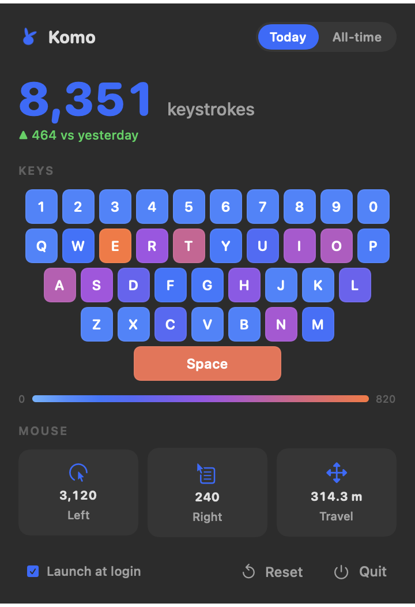
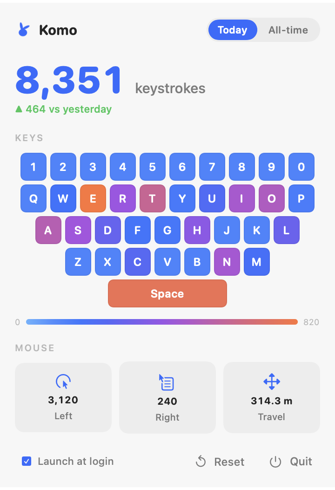

A-Z, 0-9, and Space glow by usage. Unknown keys are ignored so the headline stays honest.
Open source · Apple Silicon Mac
Your keyboard, as a tiny weather map.
Komo is a playful menu-bar tracker for macOS. It counts keystrokes, clicks, and mouse travel locally, then turns your day into a clean little heat map.
Free, open source, notarized Developer ID build. Requires macOS 14+ on Apple Silicon.


Useful stats, without turning into surveillance.
Komo records counts, not content. It never stores what you typed, only how many times each visible key was pressed.
Left clicks, right clicks, and approximate travel distance update quietly from the menu bar.
Flip between your current day and all-time totals, with yesterday comparison built in.
Local by design.
No accounts. No cloud sync. No analytics. Your stats live in a JSON file on your Mac.
- Counts only, never typed text
- Open-source Swift code
- Input Monitoring permission is explained in-app
- Signed and notarized for public download
Install in under a minute.
Download the DMG, drag Komo to Applications, then grant Input Monitoring when you want keyboard stats. Mouse stats work immediately.
Grab the latest Apple Silicon DMG from GitHub Releases.
Open the DMG and move Komo into your Applications folder.
Enable Input Monitoring to count keys. Komo never reads typed content.